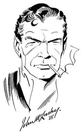

James Bond 007Licence to KillThe James Bond series focuses on a fictional British Secret Service agent created in 1953 by writer Ian Fleming, who featured him in twelve novels and two short-story collections. Since Fleming's death in 1964, eight other authors have written authorised Bond novels or novelisations: Kingsley Amis, Christopher Wood, John Gardner, Raymond Benson, Sebastian Faulks, Jeffery Deaver, William Boyd, and Anthony Horowitz. The latest novel is With a Mind to Kill by Anthony Horowitz, published in May 2022. Additionally Charlie Higson wrote a series on a young James Bond, and Kate Westbrook wrote three novels based on the diaries of a recurring series character, Moneypenny. |
 |
Ian Fleming created the fictional character of James Bond as the central figure for his works. Bond is an intelligence officer in the Secret Intelligence Service, commonly known as MI6. Bond is known by his code number, 007, and was a Royal Naval Reserve Commander. Fleming based his fictional creation on a number of individuals he came across during his time in the Naval Intelligence Division and 30 Assault Unit during the Second World War, admitting that Bond "was a compound of all the secret agents and commando types I met during the war".[2] Among those types were his brother, Peter, who had been involved in behind-the-lines operations in Norway and Greece during the war.[3] Aside from Fleming's brother, a number of others also provided some aspects of Bond's make up, including Conrad O'Brien-ffrench, Patrick Dalzel-Job and Bill "Biffy" Dunderdale.[2] The name James Bond came from that of the American ornithologist James Bond, a Caribbean bird expert and author of the definitive field guide Birds of the West Indies. Fleming, a keen birdwatcher himself, had a copy of Bond's guide and he later explained to the ornithologist's wife that "It struck me that this brief, unromantic, Anglo-Saxon and yet very masculine name was just what I needed, and so a second James Bond was born".[4] He further explained that:
When I wrote the first one in 1953, I wanted Bond to be an extremely dull, uninteresting man to whom things happened; I wanted him to be a blunt instrument ... when I was casting around for a name for my protagonist I thought by God, [James Bond] is the dullest name I ever heard. — Ian Fleming, The New Yorker, 21 April 1962[5]
|
|